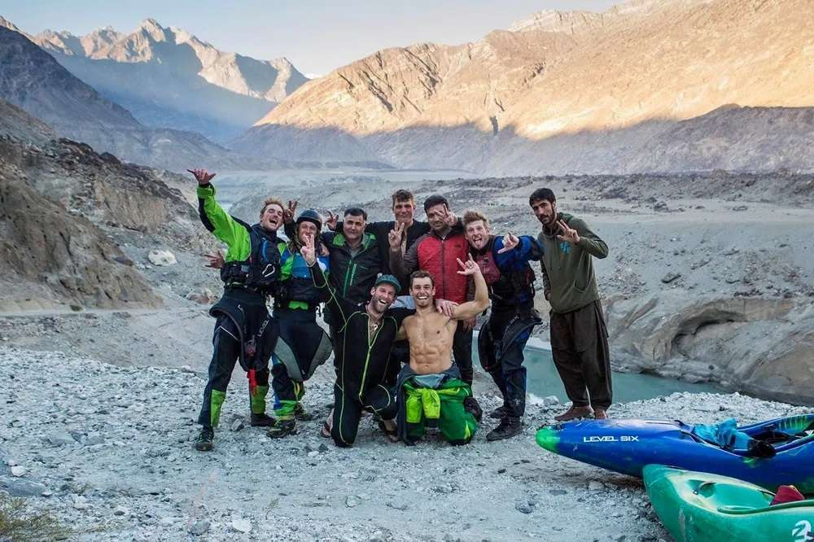
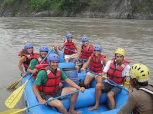

At IT Blue Water Expeditions we excel at providing exciting adventures with a touch of class. It means we provide more amenities and services than other outfitters. Our goal is to help you be comfortable in the outdoors and have a great vacation. We provide enough civilization for anyone to be comfortable on our river rafting trips.


About IT Blue Water
History
While river rafting and kayaking adventure in Pakistan may not be as popular as in some other countries. It has been attracting adventure seekers since the 1980s. Pakistan offers access to a variety of rivers, with the potential for first descents and challenging paddling experiences. There’s more to explore beyond the well-known Rhondu Gorges, and the locals are known for their friendliness.

People in Pakistan was very hospitable and would like to serve with food and gifts. Almost every Pakistani is involved with criket game. We have also won a wolrd cup once and criket is in our blood.
Adventure Awaits You!